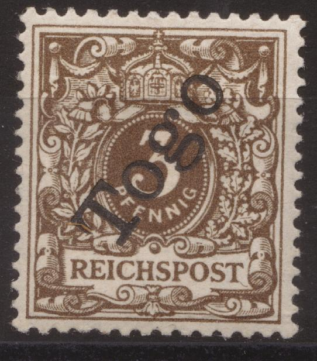
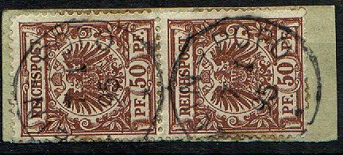
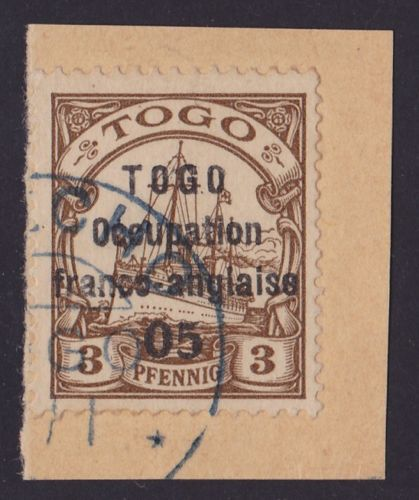
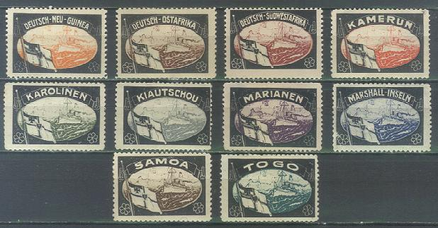

{kind=link}


Return To Catalogue - Germany Overview - Togo (Anglo-French occupation)
Note: on my website many of the
pictures can not be seen! They are of course present in the cd's;
contact me if you want to purchase the catalogue.

3 p brown 5 p green 10 p red 20 p blue 25 p orange 50 p brown
Value of the stamps |
|||
vc = very common c = common * = not so common ** = uncommon |
*** = very uncommon R = rare RR = very rare RRR = extremely rare |
||
| Value | Unused | Used | Remarks |
| 3 p | * | * | |
| 5 p | * | * | |
| 10 p | ** | ** | |
| 20 p | ** | ** | |
| 25 p | *** | *** | |
| 50 p | R | R | |
The most common cancels that I have seen are Lome and Klein-Popo. These stamps are known cancelled to order (I have no further information).
Forged Fournier cancel "KLEIN-POPO 5 11 98 *" as taken
from a Fournier Album.
The above stamps are Fournier forgeries, both the stamps and the overprints are forged. For more information on forgeries of the German colonies click here. The cancel "KLEIN-POPO 5 11 98 *" was also forged by Fournier (date always the same).
The next genuine stamp has a forged "TOGO" overprint, the "T" and "G" of this word are entirely different from the genuine overprint.
I have also seen stamps in the values 3 p, 5 p and 10 p with the same forged overprint.
Small size
3 p brown 5 p green 10 p red 20 p blue 25 p orange and black on yellow 30 p orange and black 40 p red and black 50 p violet and black 80 pf red and black on red Large size
1 M red 2 M blue 3 M violet 5 M black and red
The pfennig values have perforation 14 x 14 1/4, the Mark values have perforation 14.
Value of the stamps |
|||
vc = very common c = common * = not so common ** = uncommon |
*** = very uncommon R = rare RR = very rare RRR = extremely rare |
||
| Value | Unused | Used | Remarks |
| With no watermark | |||
| 3 p | c | ** | |
| 5 p | ** | * | |
| 10 p | * | c | |
| 20 p | * | * | |
| 25 p | c | *** | |
| 30 p | * | *** | |
| 40 p | * | *** | |
| 50 p | * | ** | |
| 80 p | * | ** | |
| 1 M | * | *** | |
| 2 M | ** | R | |
| 3 M | ** | R | |
| 5 M | R | RR | |
| With watermark 'Lozenges' | |||
| 3 p | c | - | Non issued |
| 5 p | c | c | |
| 10 p | c | *** | |
| 5 M | *** | - | Non issued |
(I think this is a Fournier forgery)
Fournier has made forgeries of the small ship design of Togo. For more information on forgeries of the German colonies click here.
I think the above forgeries are the so-called USA forgeries, they have a very strange cancel: "KETE KRATS.....". I have also seen the values 10 p red and 20 p blue with the same cancel.
Another forgery of the 1 M value:
I've seen postcards ("Postkarte") in the small 5 c design of which modern forgeries were made. They do not seem to be computer generated forgeries.
Small size 3 p brown 5 p green 10 p red 20 p blue 25 p orange and black on yellow 30 p orange and black 40 p red and black 50 p violet and black 80 pf red and black on red Surcharged
'Half penny' on 3 p brown 'One penny' on 5 p green Large size 1 M red 2 M blue
Value of the stamps |
|||
vc = very common c = common * = not so common ** = uncommon |
*** = very uncommon R = rare RR = very rare RRR = extremely rare |
||
| Value | Unused | Used | Remarks |
| Two types of overprint exist, cheapest type: | |||
| 3 p | RR | RR | |
| 5 p | RR | RR | |
| 10 p | RR | RR | |
| 20 p | R | R | |
| 25 p | R | R | |
| 30 p | R | R | |
| 40 p | RR | RR | |
| 50 p | RRR | RRR | |
| 80 p | RR | RR | |
| 1 M | RRR | RRR | |
| 2 M | RRR | RRR | |
| 1/2 p on 3 p | R | R | |
| 1 p on 5 p | *** | *** | |
First type of overprint 'Dahomey-type'
Small size 5 p green 10 p red 20 p blue 25 p orange and black on yellow 30 p orange and black 40 p red and black 50 p violet and black 80 pf red and black on red Surcharged
Note the different types of overprint.
'05' on 3 p brown '10' on 5 p green Large size
1 M red 2 M blue 3 M violet 5 M black and red
Value of the stamps |
|||
vc = very common c = common * = not so common ** = uncommon |
*** = very uncommon R = rare RR = very rare RRR = extremely rare |
||
| Value | Unused | Used | Remarks |
| Cheapest type: | |||
| 5 p | RR | RR | |
| 10 p | RR | RR | |
| 20 p | *** | *** | |
| 25 p | R | R | |
| 30 p | R | *** | |
| 40 p | RR | RR | |
| 50 p | RRR | RRR | |
| 80 p | RRR | RR | |
| 1 M | - | RRR | Only one stamp exists |
| 2 M | RRR | RRR | |
| 3 M | RRR | RRR | |
| 5 M | RRR | RRR | |
| 5 on 3 p | R | R | |
| 10 on 5 p | *** | *** | |
There is a second type of overprint ('Lome type', without serifs).

Second type of overprint (Lome type).
For more stamps of Togo (Anglo-French occupation), click here.
Labels commemorating the loss of the German colonies exist, including for Togo. They have the size of the large 'Hohenzollern' yacht issue. The stamps have a coloured center surrounded by a black design.

{kind=link}
{kind=link}
{kind=link}
{kind=link}
{kind=link}
{kind=link}
{kind=link}
{kind=link}